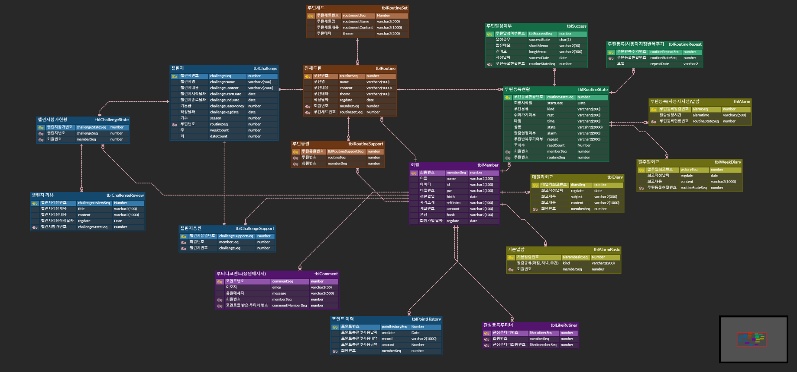
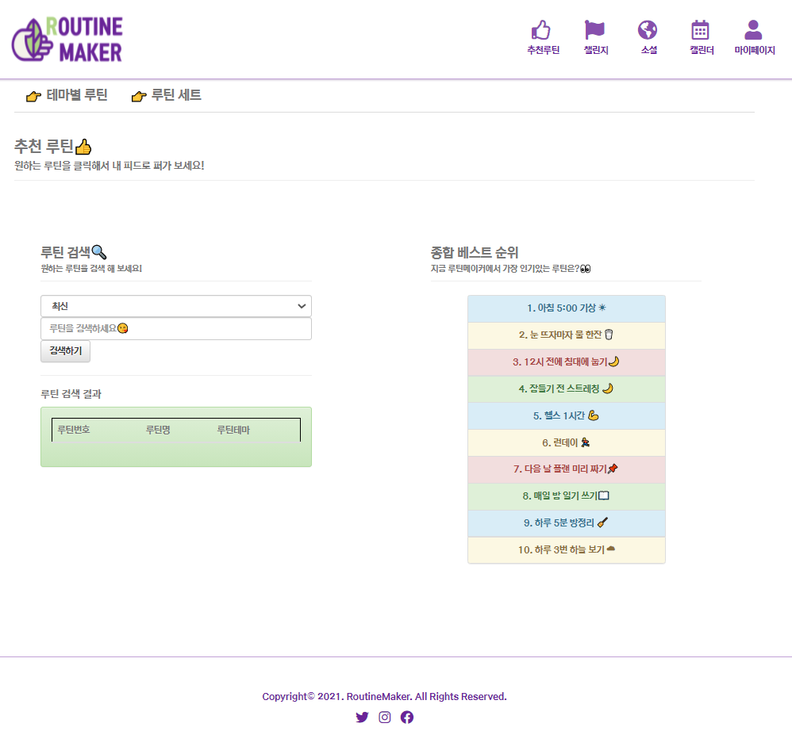
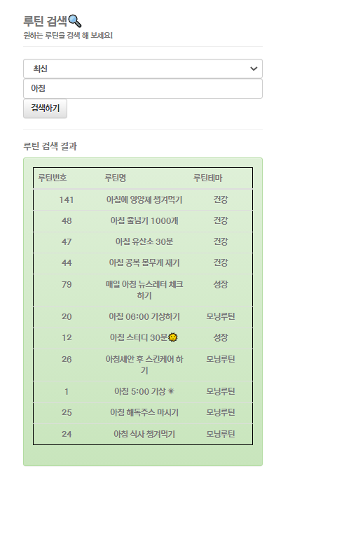
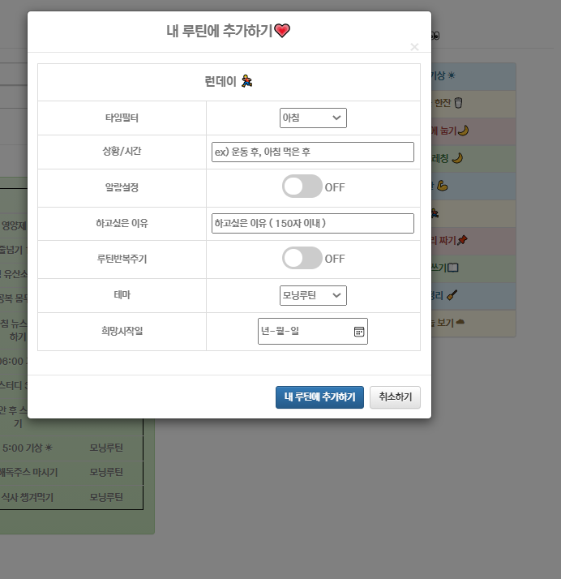
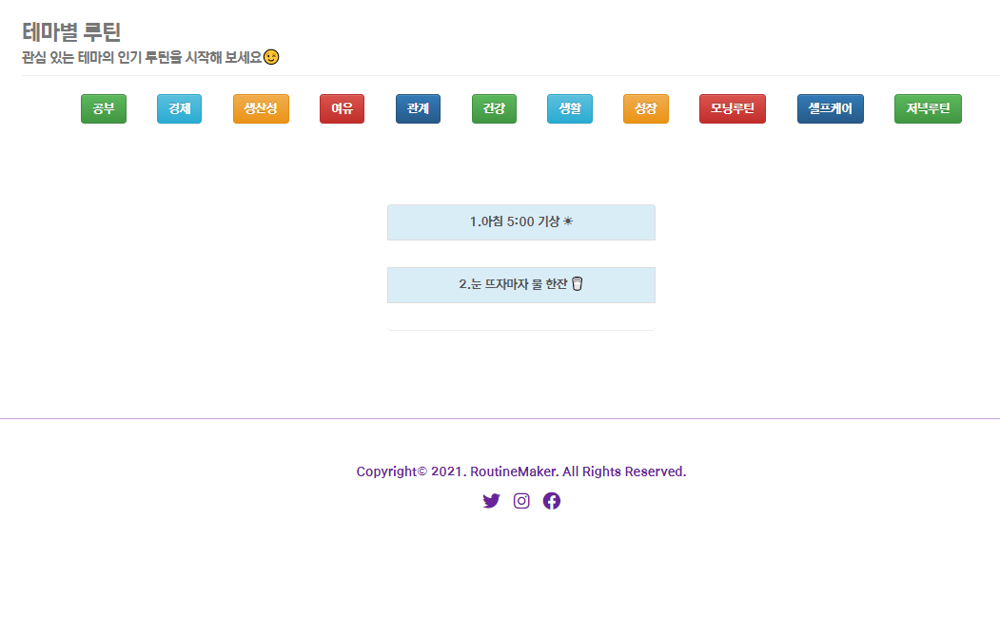
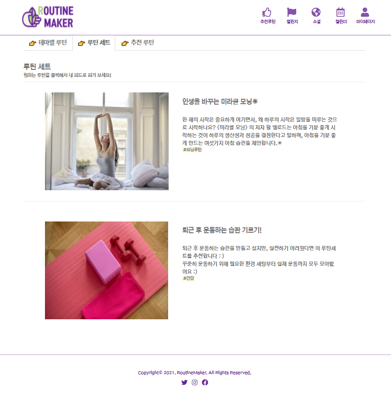
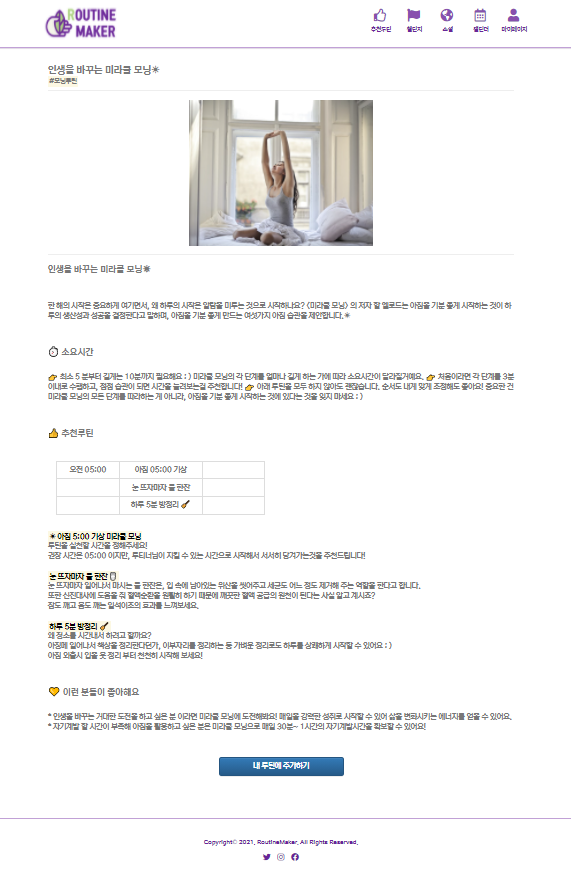
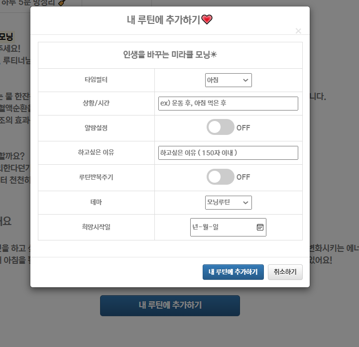

#1. 프로젝트 정보
| 프로젝트명 |
RoutineMaker :
개인 습관 형성사이트
|
| 프로젝트 진행기간 |
2021. 08. 10 ~ 2021. 09. 02 |
| 프로젝트 개요 |
사용자의 습관을 형성하고 유지 관리할 수 있게 돕는
습관 형성 웹 사이트
|
| 프로젝트 목적 |
1. 사용자의 습관을 형성하고 유지·관리 할 수 있게 돕는
습관 형성 웹 사이트
2. 챌린지, 추천 루틴, 셀프 피드백 등 제공하는 다양한
방식으로 사용자들의 꾸준한 습관형성에 도움이 되는
사이트
|
| 참여인원 |
3명 |
| 담당업무 |
DataBase설계, SQL문 쿼리작성, 추천 루틴 페이지 :
최신순,조회수순,좋아요순으로 필터를 이용해 루틴
검색기능 구현, 종합 베스트 순위 구현, 루틴 추가 기능
구현, 테마별 필터를 이용해 루틴 조회 기능 구현, 루틴
세트 조회 기능
|
#2. 사용 기술
| 개발환경 |
Windows10 |
| 개발 툴 |
Eclipse, SQL Developer, STS(Spring Tool Suite) |
| 사용 기술 |
Java, Spring FrameWork, HTML, CSS, JavaScript,
jQuery, BootStrap
|
#3. 구현화면
1. ERD : 전체적인 DB 구조입니다.
| 회원 테이블과 루틴 테이블을 기준으로 기능별로 5개의
파트로 나누어 구성했습니다.
👉ERD 이미지 다운로드

2. 추천 루틴 - 초기 화면
| 추천 루틴 페이지 메인화면입니다.
왼쪽
메뉴에서는 사용자가 원하는 루틴을 검색할 수 있으며,
오른쪽
메뉴에는 사용자들이 많이 찾는 베스트 루틴들을 확인 할 수
있도록 구성하였습니다.
또 상단에 네비게이션 바를 통해
테마별 루틴, 루틴 세트 화면으로 이동이 가능합니다.

2-1. 추천 루틴 - 루틴 검색하기
| 사용자는
최신순, 좋아요순, 응원순으로 필터링하여 루틴을 검색할 수
있으며, 검색 한 루틴을 마이 루틴에 추가할 수 있습니다.
Ajax
기술을 사용하여 구현하였습니다.

2-2. 추천 루틴 - 내 루틴에 추가하기
| 종합
베스트 순위에서 원하는 루틴을 클릭하여 마이 루틴에 추가 할
수 있습니다. 타임필터, 상황/시간, 알람설정, 하고싶은 이유,
루틴반복주기, 테마, 희망시작일을 설정할 수 있습니다.

3. 테마별 루틴 - 루틴 테마별로 조회
| 사용자는
원하는 루틴을 테마별로 조회할 수 있으며, 조회 한 루틴을
선택하여 마이 루틴에 추가할 수 있습니다.
모닝 루틴을
선택했을 때의 결과입니다.

4. 루틴 세트 - 초기 화면
| 사용자는 루틴
세트 메뉴를 클릭하여 접근할 수 있으며, 함께 하면 좋을
루틴들을 모아놓은 루틴 세트를 소개해주는 화면입니다.

4-1. 루틴 세트 - 상세 페이지
| 사용자는
루틴 세트 초기화면에서 원하는 루틴을 클릭하여 루틴 상세
페이지에 접근할 수 있습니다. 상세페이지에서는 소요시간,
추천루틴, 이런분들이 좋아해요 메뉴를 통해서, 루틴을
상세하게 설명했으며 사용자의 루틴에 대한 이용도를
높였습니다. 또한 맨 하단에 내 루틴에 추가하기 기능을 통해
역시 루틴세트에 포함된 모든 루틴을 한꺼번에 루틴에 추가할
수 있도록 구현하였습니다.


#4. 후기
1. 기획과정
Spring 프로젝트는 개인 습관 형성 사이트를 주제로
진행했습니다.
평소에 생산성 관련 어플리케이션이나 사이트에 관심이
많았기 때문에,
게시판 형식의 프로젝트 보다
재밌을 것 같다며 팀원들을 설득해 진행하게 되었습니다.
2. 구현과정
요구사항 분석서를 기반으로 팀원들과 ERDCloud DB
모델링 도구를 활용하여 테이블과 컬럼, 그리고
테이블간의 관계 설계를 진행했습니다. 테이블 작성이
끝난 후, 주요 테이블을 기준으로 5개로 분류하여 파트를
나눠 DML을 생성하였습니다.
팀원 한 분의 DB계정에
접속하여 DB를 공유해서 사용했고, 카카오오븐
프로토타입 툴을 이용하여 화면설계서를 작성했습니다.
Spring FrameWork로 맡은 부분을 구현했습니다.
먼저
전체적인 설정을 pom.xml로 설정하고, web.xml에서
인코딩처리와 mapping처리를 하였으며, tiles.xml
파일에서 공용으로 쓸 페이지들을 작업하여 추후
개인작업시 편리하게 작업할 수 있었습니다. 또한
mybatis.xml파일에서 alias를 설정하여 추후에
mapper에서 DB쿼리를 연결할때 개인적으로는 Spring
FrameWork 수업 중, 배웠던 Ajax 기술을
접목시켜보고싶어 루틴을 검색하는데에 사용했던 점이
기억에 남습니다. 페이지 새로고침이 없이 검색이 되어서
재밌었습니다.
3. 팀 협업
새롭게 바뀐 팀원들과 시작한 팀 프로젝트였기 때문에
초반에 어색했지만, 하고싶은 주제가 있었기 때문에
적극적으로 의견을 어필했습니다. 꼼꼼한 팀원들이
있었기에 요구 사항 분석서, ERD, 화면설계서 등등
서류작업이 원활하게 진행되었습니다.
덕분에 실제
구현시에 헷갈리는 부분이 없었던 점이 좋았습니다.
4. 느낀점
Servlet / JSP로 구현했던 지난 프로젝트와 달리 Spring
FrameWork를 사용해서 구현하니 Servlet / JSP 방식과
Spring FrameWork 사용시 차이점을 느낄 수 있었습니다.
기존 Servlet / JSP 개발시에는 Spring의 Controller에서
할 수 있는 작업을 모두 java파일로 만들어서 매핑을
해줘야했던 점과, include를 이용해서 jsp파일마다
레이아웃을 정해줘야했다면, Spring에서는 tiles라는
기술을 이용하여 편하게 관리할 수 있었던 점이 크게
편리했습니다. Contoller, Mapper, DAO , DTO 등등
각자의 역할에 맞춰 구현하다보니 코드가 잘못 되었을 때
어디서 잘못된건지 체크하기가 쉬웠습니다.
교육기관에서의 마지막 프로젝트여서 팀원들과의 스케쥴
조율이 어렵다 보니, 프로젝트 기간에 비해서 구현이
더뎌진 점은 조금 아쉬움이 남지만 다만 남은 팀원들과
각자 맡은 부분은 최대한 구현하고자 하여 마지막까지
으쌰으쌰 열심히 했던 점에서 즐겁게 작업했던
프로젝트입니다.
{kind=link}